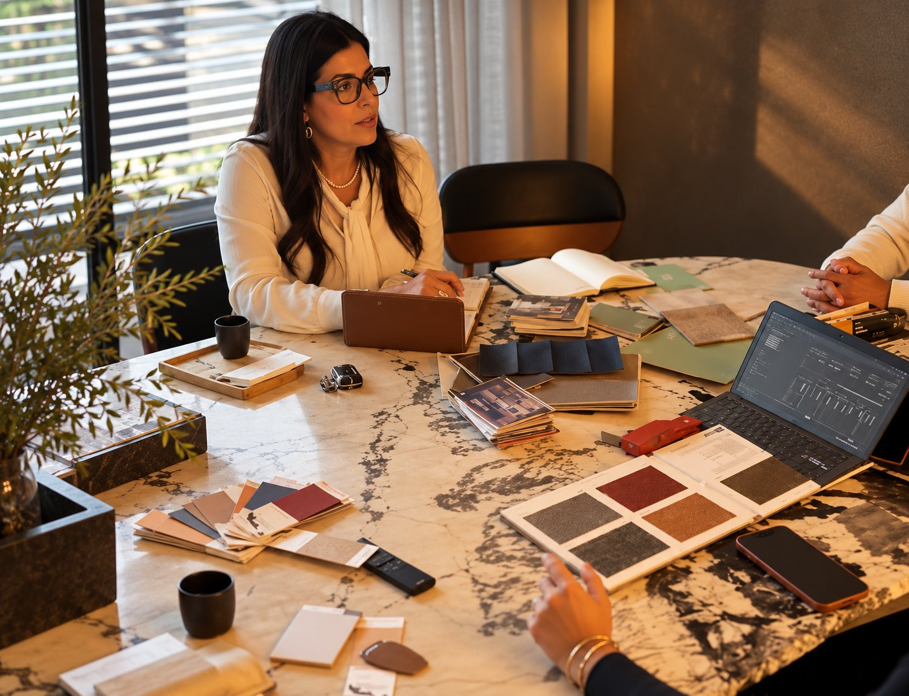
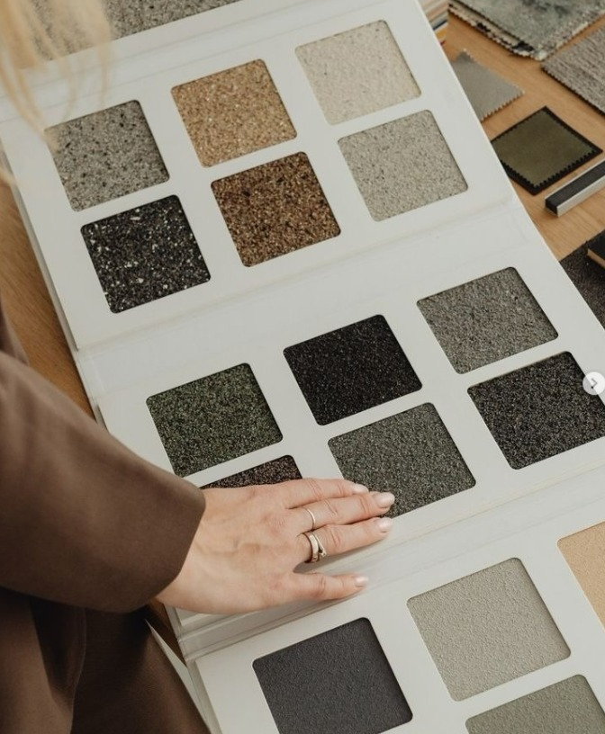
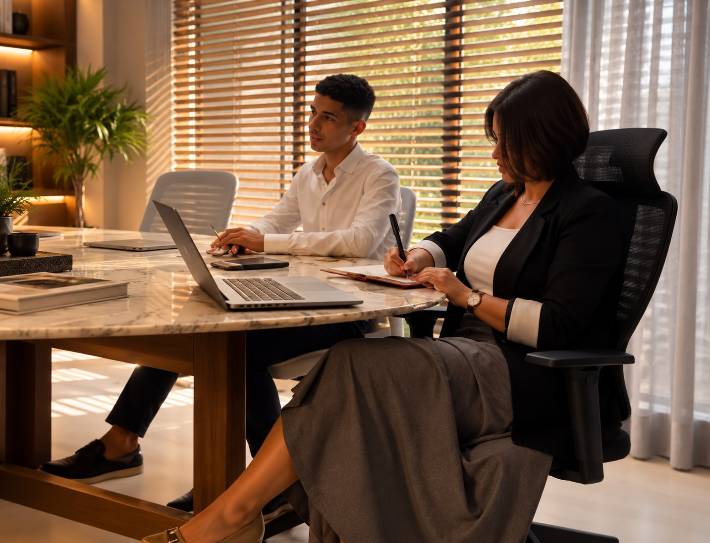
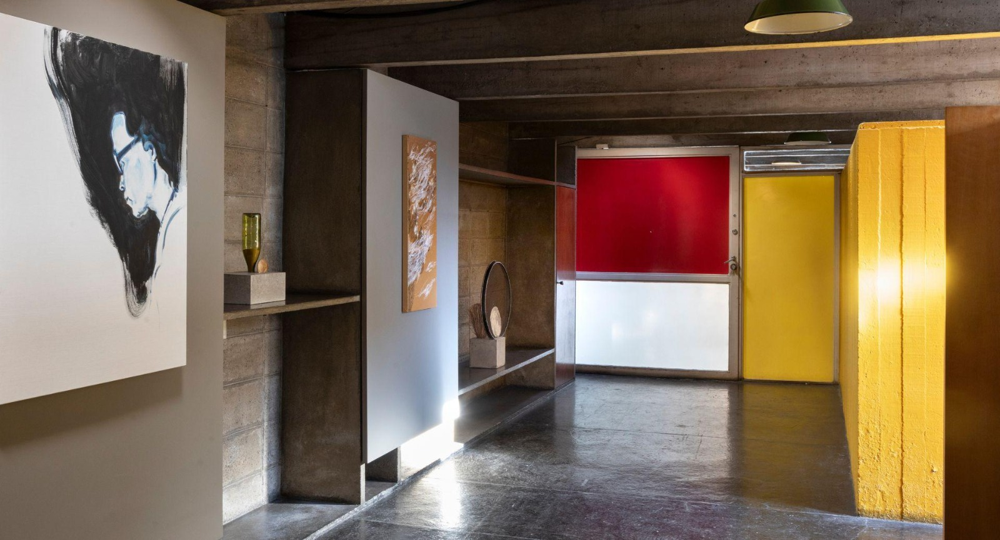

01Materiais
Amostras na mesa, combinadas à luz do lugar, antes de qualquer decisão.
Nossos espaços02 de 05
Mobiliário, materiais e luz escolhidos a dedo para que cada ambiente tenha a sua personalidade.
Falar com a BE.GALERIA

O que acreditamos
Nos interiores, a escolha de cada material, tecido, pedra e peça de mobiliário define o clima do ambiente. Trabalhamos com uma curadoria de fornecedores e artistas para compor espaços que unem conforto e presença.
Desenvolvemos também projetos de mobiliário sob medida, desenhados para o lugar e para quem vai usá-los.
Em resumo
O que compõe
Arraste para o lado

01Amostras na mesa, combinadas à luz do lugar, antes de qualquer decisão.
Peças sob medida e seleção de design autoral, pensadas para o uso real.

03Obras e objetos escolhidos com a galeria para dar alma ao ambiente.
Mande fotos do espaço e as suas referências. Começamos pela paleta de materiais.
Falar com a BE.GALERIAEm imagens
Abra qualquer foto para ver em tamanho grande.
Próximo espaço
Viva essa